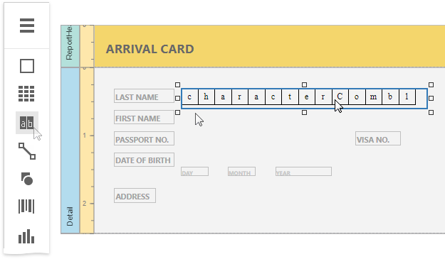
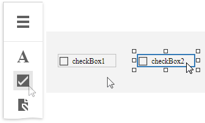

Interactive E-Forms
This tutorial describes how to create an electronic form and make it fillable directly in Print Preview before printing or exporting it.

To get started with this tutorial, create a new report or open an existing one.
Add Form Fields
Add the Label controls to the report and arrange them according to the form's template. Set the labels' Text property to the form's field names.

Add Fillable Cells
Use the Character Comb control for the form's text fields. This control displays letters in individual cells and allows end users to fill these cells in Print Preview.
Drop the Character Comb item from the Toolbox onto the report.

Select all the added controls, clear their text, switch to the Properties panel and expand the Layout category. Adjust cell settings, such as Cell Width, Cell Height, Cell Horizontal Spacing, etc.

Expand the Behavior category, select the Edit Options section and set the controls' Enabled property to Yes to enable content editing in Print Preview.

Add Check Box Editors
Add two Check Box controls to the report for selecting a gender (Male/Female fields). Then, change their text and appearance settings.

To enable switching check box states in Print Preview, expand the Behavior category, select the Edit Options section and set the Enabled property to Yes as you did before. To allow selecting only one option at a time, combine these check boxes into a logical group by specifying the same value for the Group ID property.

Add the Signature Editor
Add the Picture Box control for the form's Signature field.
Switch to the Properties panel and adjust control's appearance settings. Expand the Behavior category and select the Edit Options section. Set the Enabled property to Yes and the Editor Name property to signature to enable drawing in Print Preview.

Get the Result
The e-form report is now ready. Switch to Print Preview to see the result.
To highlight all editing fields available in the form, click the  Highlight Editing Fields button on the Print Preview toolbar. Clicking a field invokes the appropriate editor.
Highlight Editing Fields button on the Print Preview toolbar. Clicking a field invokes the appropriate editor.